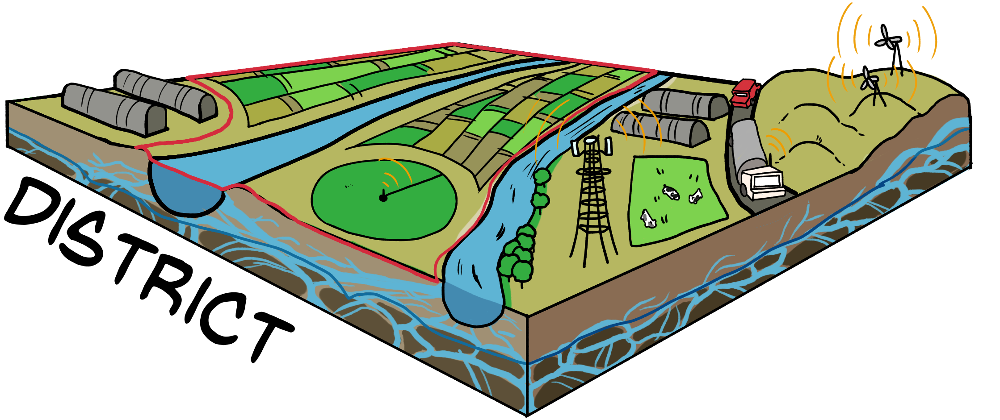

Our Approach to Research

- Climate Resilience: Developing climate services for data-driven decisions.
- Markets: Research and practice on water markets through economics and institutions.
- Management: Evaluate novel management strategies to secure water.
- Measurement: Improve accuracy and reduce uncertainty in water budgets.
Climate Resilience
The climate resilience thrust examines three research questions:
- To what extent will changes in the characteristics of multi-year droughts over this century alter the willingness to engage in water trading and banking as part of climate resilience efforts?
- Can drought early warning systems propel action by stakeholders for water trading?
- How can ecosystem services be maintained while adapting agricultural water management to anticipated hydrologic extremes?
Researchers: Abatzoglou (UCM), Moyers (UCM), Santos (UCM), Viers (UCM), Null (USU), Grimm (EDF)
Markets
The markets thrust examines three research questions:
- How does institutional context affect the viability of and potential for water markets to enhance climate resilience for agriculture and ecosystems?
- What are the key drivers and barriers for (a) the adoption of water markets as a policy instrument and (b) growers’ participation in water markets? How can new data and platforms reduce transaction costs and barriers to entry?
- How can estimates of the potential benefits and impacts of water markets better account for institutional context, scale dependency, temporal considerations, and the diversity of interests in resilient water and environmental systems?
Researchers: Bruno (UCB), Ayres (PPIC) Escriva-Bou (PPIC), Green Nylen (UCB), Hanak (PPIC), Kiparsky (UCB), Medellín (UCM), Torrell (NMSU), Woolley (UCB), Yost (USU)
Management

The water management thrust addresses three questions:
- How can climate change impacts be managed through aquifer recharge, water trading, and land use planning to sustain agriculture and the environment?
- How might water banking offer a flexible, adaptive, and comprehensive approach to agricultural and environmental water management?
- Can short-term decision-making be informed through modeled outcomes of long-term system responses?
Researchers: Dahlke (UCD), Moyers (UCM), Fernald (NMSU), Yost (USU), Rosenberg (USU), Null (USU), Khan (UCM)
Measurement

The measurement thrust examines three research questions:
- Do existing systems support water accounting needs to enable water trading?
- How does uncertainty in water accounting affect water trading?
- What are the full life-cycle impacts of cropping choices, managed aquifer recharge, and water banking on water trading?
Researchers: Torres-Rua (USU), Harmon (UCM), Naughton (UCM), Sabie (NMSU), Bawazir (NMSU), Sabiston (NMSU), Ghezzehei (UCM)